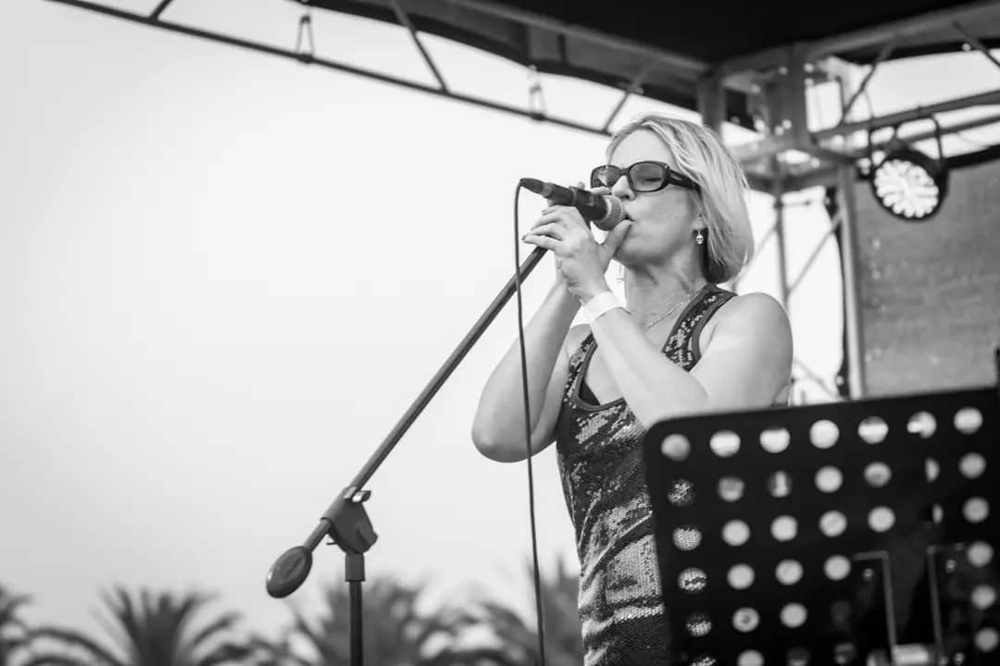
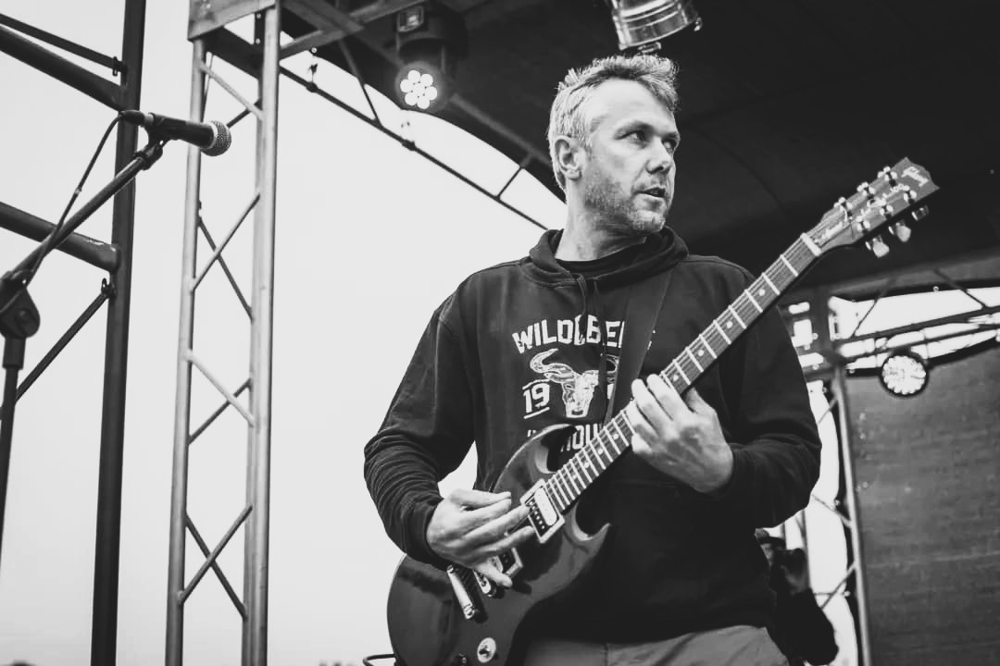
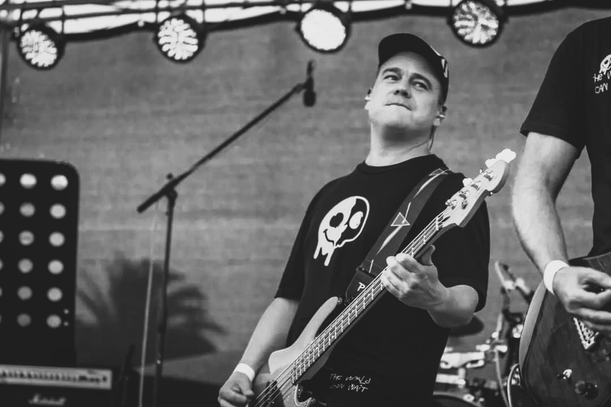
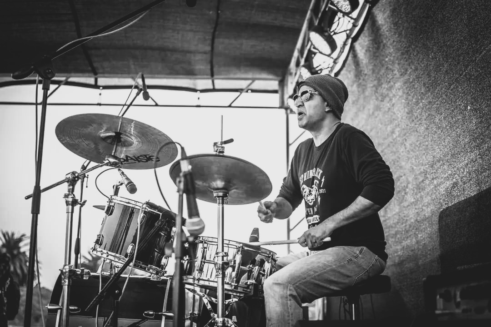
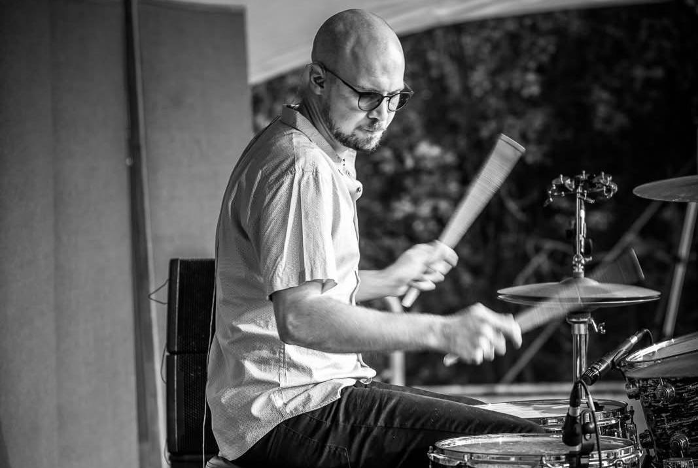

JACKY
Vocals
Years Active: 2022 - Present
Bio: Jacky brings a powerful presence as the band’s lead female vocalist.
RENE
Vocals and Guitar
Years Active: 2022 - Present
Bio: Rene drives the band’s sound with his emotive vocals and versatile guitar work.
GEORG

Instrument: Guitar
Years Active: 2022 - Present
Bio: Georg shapes the band’s melody with his expressive guitar riffs.
MORNE
Instrument: Bass
Years Active: 2022 - Present
Bio: Morne anchors the group’s rhythm section with deep, steady bass lines.
ANESH
Instrument: Drums, Keyboard and Vocals
Years Active: 2022 - Present
Bio: Anesh adds a dynamic edge, switching seamlessly between drums, keyboard, and vocals.
CHRIS
Instrument: Drums, Guitar and Vocals
Years Active: 2022 - Present
Bio: Chris delivers versatility on drums, guitar, and vocals, rounding out the band’s sound.